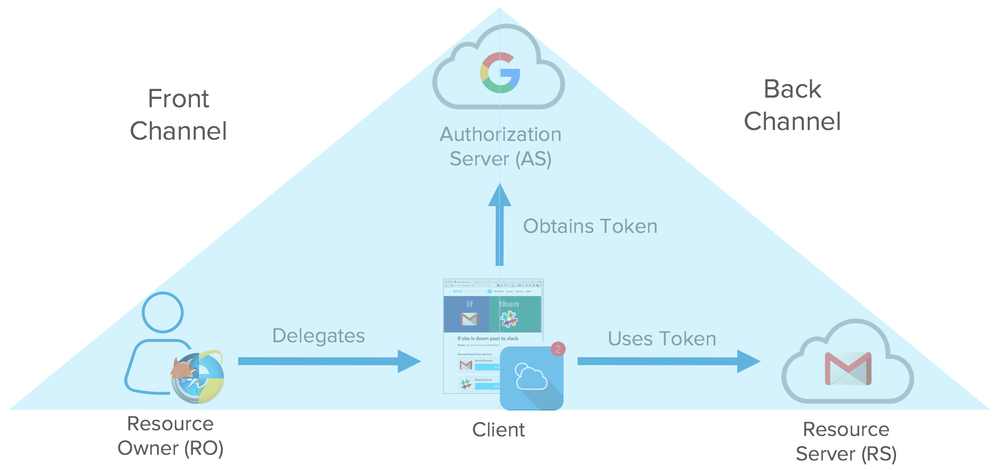

Versions of OAuth:
OAuth 1.0
OAuth 2.0
What is OAuth 1.0?
OAuth provides a method for clients to access server resources on behalf of a resource owner (such as a different client or an end- user). It also provides a process for end-users to authorize third- party access to their server resources without sharing their credentials (typically, a username and password pair), using user-agent redirections.
What is OAuth 2.0?
The OAuth 2.0 authorization framework enables a third-party application to obtain limited access to an HTTP service, either on behalf of a resource owner by orchestrating an approval interaction between the resource owner and the HTTP service, or by allowing the third-party application to obtain access on its own behalf.
How are OpenID and OAuth different?
Purposes
OpenID was created for federated authentication, that is, letting a third-party authenticate your users for you, by using accounts they already have. OAuth was created to remove the need for users to share their passwords with third-party applications.
How are OpenID and OAuth different?
Features
Both protocols provide a way for a site to redirect a user somewhere else and come back with a verifiable assertion. OpenID provides an identity assertion while OAuth is more generic in the form of an access token which can then be used to "ask the OAuth provider questions".
How are OpenID and OAuth different?
Technical Implementations
OAuth authorize the user.
OpenID identity the user.
Steps
- App requests authorization from User
- User authorizes App and delivers proof
- App presents proof of authorization to server to get a Token
- Token is restricted to only access what the User authorized for the specific App
OAuth Central Components
- Scopes and Consent
- Actors
- Clients
- Tokens
- Authorization Server
- Flows
OAuth Scopes
OAuth Actors

Clients can be public and confidential
OAuth Tokens
- short-lived (hours and minutes)
- longer-lived (days, months, years)
Token define isn't in spec. Usually tokens used JSON web tokens (a standard).
Tokens are retrieved from endpoints on the authorization server
Two different flows: getting the authorization and getting the tokens.
- Resource Owner starts flow to delegate access to protected resource
- Client sends authorization request with desired scopes via browser redirect to the Authorize Endpoint on the Authorization Server
- Authorization Server returns a consent dialog saying “do you allow this application to have access to these scopes?”. Client authenticate to the application or use cached session cookie.
- The authorization grant is passed back to the application via browser redirect.